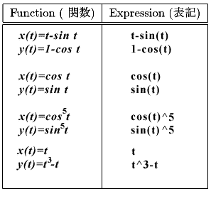
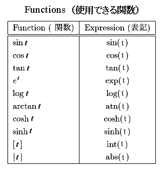
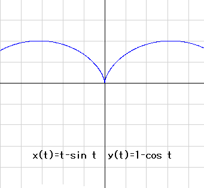
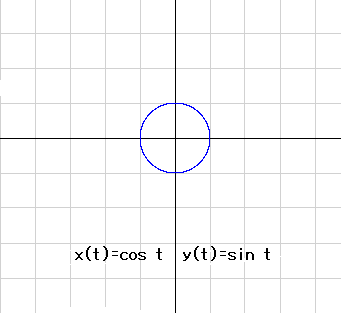
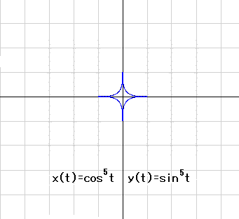
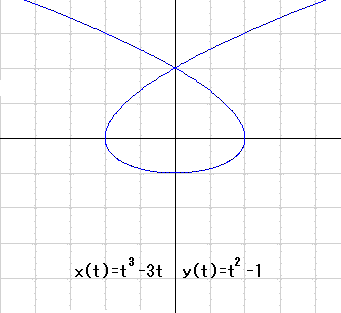
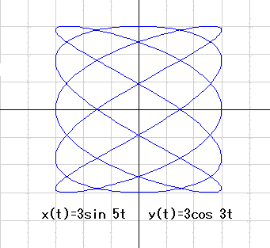
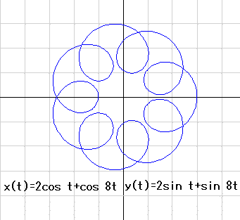
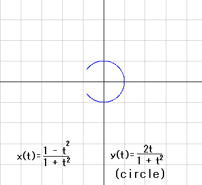
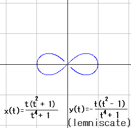

Simple Graph (Parametric Function)
The applet draws the graph of parametric functions. Using the applet, graph the functions in the table. Then try various functions.

Applet
The following is the list of functions defined in this applet.

Examples







